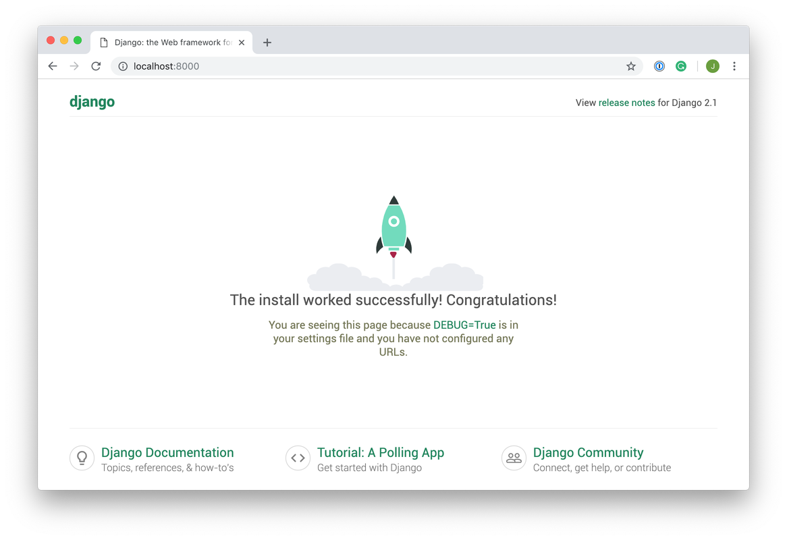

the magic of Django web framework

What is Django
Django is a Python-based web framework which allows you to quickly create web application without all of the installation or dependency problems that you normally will find with other frameworks. it was designed to make common web development tasks fast and easy. and it can be also used to build complex web applications.
Why You Should Learn Django ?

- First of all, it’s written in Python, one of the most readable and
beginner-friendly programming languages out there.
also is quick you can develop fully fleshed web
applications in a short period of time.
And we are not forgetting that he have thousands of
additional packages available.
is a portable framework and you can run
its code on any platform including PC, Mac, Windows, Linux, etc.
and with almost 2k+ contributors and many more are joining every day. It is
supported by the huge community of developers and the code is always
updated by the developers who use it.
- Installation of Django
Check Whether You Have Installed Python 3 Or Not. If Not, Then Download Python 3 From Here
Installation pip and the set the virtual env
Open command prompt and enter following command
python -m pip install -U pip
Create a new directory for your project to live in
mkdir Doflamingo
Install virtual environment
pip install virtualenv
- Create a Virtual environment
first create a virtual environment
python -m venv Virtual
Change directory to Doflamingo by this command-
cd Virtual
activate the virtual environment-
Virtual\Script\activate
Install Django:
pip install django
Creating a Project:

make sure you’re in the Doflamingo directory, and you’ve activated your virtual environment
run the this command to create the project:
django-admin startproject webapp
here's how the structure should look like
Doflamingo
│
├── webapp/
│ ├── webapp/
│ │ ├── __init__.py
│ │ ├── settings.py
│ │ ├── urls.py
│ │ └── wsgi.py
│ │
│ └── manage.py
│
└── Virtual
them you need to specify your project name in INSTALLED_APPS list as follows in settings.py:
# Application definition
INSTALLED_APPS = [
'django.contrib.admin',
'django.contrib.auth',
'django.contrib.contenttypes',
'django.contrib.sessions',
'django.contrib.messages',
'django.contrib.staticfiles',
'webapp'
]
Now run,
Python manage.py runserver
in your browser go to localhost:8000
and voila , you’ve created a Django site!
Django Views:

simply A view function is a Python function that takes a Web request and returns a Web response. This response can be the HTML contents of a Web page. it's a part of the user interface they usually render the HTML/CSS/Javascript in your Template files into what you see in your browser when you render a web page.
Django View Example:
To create our first view, we need to modify the views.py file in our events app
from django.http import HttpResponse
import datetime
def current_datetime(request):
now = datetime.datetime.now()
html = "<html><body>It is now %s.</body></html>" % now
return HttpResponse(html)
- Function Based Views
Function-based views are functions that return an HTTP response after executing the required business logic of a certain view.
- Simple HTTP Response
This is used in cases where the message is very simple—maybe just short text—important, and the presentation does not matter. The code snippet below demonstrates a function-based view returning a simple HTTP response.
from django.http import HttpResponse
def simple_http_response(request):
# perform business logic
return HttpResponse("Hello world from Doflamingo!")
- Redirect
redirect is used when the logic requires that after execution, the user is redirected to another view.
from django.http import HttpResponseRedirect
from django.urls import reverse
def delete_item(request, id):
#perform delete operation successfully
return HttpResponseRedirect(reverse('url_name_of_homepage'))
Django Templates:

basically written in HTML, CSS, and Javascript in a html file.
Django framework efficiently handles and generates
dynamically HTML web pages that are visible to the end-user.
- Configuration :
configured the templates in settings.py
TEMPLATES = [
{
# Template backend to be used, For example Jinja
'BACKEND': 'django.template.backends.django.DjangoTemplates',
# Directories for templates
'DIRS': [[os.path.join(BASE_DIR, "name_of_the_template_file")]],
'APP_DIRS': True,
# options to configure
'OPTIONS': {
'context_processors': [
'django.template.context_processors.debug',
'django.template.context_processors.request',
'django.contrib.auth.context_processors.auth',
'django.contrib.messages.context_processors.messages',
],
},
},
]
create a view:
# import Http Response from django
from django.shortcuts import render
# create a function
def flamingo_view(request):
# create a dictionary to pass
# data to the template
context ={
"first_name":"Don",
"middle_name":"Quixote",
"last_name":"Doflamingo"
}
# return response with template and context
return render(request, "Doflamingo.html", context)
create a template in templates
<!DOCTYPE html>
<html lang="en">
<head>
<meta charset="UTF-8">
<meta name="viewport" content="width=device-width, initial-scale=1.0">
<meta http-equiv="X-UA-Compatible" content="ie=edge">
<title>Homepage</title>
</head>
<body>
<h1>Doflamingo</h1>
<p> it's an honor to know you</p>
</body>
</html>
Django and his best friend Jinja
Variables :
A variable outputs a value from the context, which is a dict-like object mapping keys to values.
Variables are surrounded by {{ and }} like this:
My first name is {{ first_name }}
My middle name is {{ middle_name }}
My last name is {{ last_name }}.
Tags :
-Tags provide arbitrary logic in the rendering process.
-Tags are surrounded by {% and %} like this:
{% csrf_token %}
Most tags accept arguments, for example :
{% cycle 'odd' 'even' %}
Some tags require beginning and ending tags:
{% if user.is_authenticated %}
Hello, {{ user.username }}.
{% endif %}
Comments :
Template ignores everything between {% comment %} and {% end comment %}. An optional note may be inserted in the first tag.
Syntax :
{% comment 'comment_name' %}
{% endcomment %}
Example:
{% comment "Optional note" %}
Commented out text with {{ create_date|date:"c" }}
{% endcomment %}
To find out more, we recommend that you visit Django Templates Tags
Django Models:
A model is the single, definitive source of information about your data. It contains the essential fields and behaviors of the data you’re storing. Generally, each model maps to a single database table, is complex and involves a lot of different queries for creating, deleting, updating or any other stuff related to database.
Using Django Models
Now we gonna create models in app/models.py
Creating a Model
# import the standard Django Model
# from built-in library
from django.db import models
# declare a new model with a name "DonModel"
class DonModel(models.Model):
# fields of the model
title = models.CharField(max_length = 350)
description = models.TextField()
last_modified = models.DateTimeField(auto_now_add = True)
img = models.ImageField(upload_to = "images/")
# renames the instances of the model
# with their title name
def __str__(self):
return self.title
Each field takes a certain set of field-specific
arguments For example, CharField require a max_length
argument which specifies the size of the VARCHAR database
field used to store the data.
Here are some Fields you must know it
Now we’ve created the model, it’s time to add it to the database. Make sure the virtual environment is running
python manage.py makemigrations
Hit enter and then run the command:
python manage.py migrate
Validation on Fields in a Model
Every field comes in with built-in validations from Django validators. For example, IntegerField comes with built-in validation that it can only store integer values and that too in a particular range.
from django.db import models
from django.db.models import Model
# Create your models here.
class DonModel(Model):
doflamingo_field = models.IntegerField()
def __str__(self):
return self.doflamingo_field
After that makemigrations and migrate
and here are some of Fields option
Relationships Fields
model data types and fields list
Django Forms:
Django provides a range of tools and libraries to help you build forms to accept input from site visitors, and then process and respond to the input. For example, Registering a user by taking input as his name, email, password, etc.
Note:Django Fields work like Django Model Fields
Syntax :
from django import forms
class DonsForm(forms.Form):
# each field would be mapped as an input field in HTML
field_name = forms.Field(**options)
Example:
from django import forms
# creating a form
class DonForm(forms.Form):
title = forms.CharField()
description = forms.CharField()
- Render Django Forms
- there is 3 in-built methods that can be used to render Django form fields.
- {{ form.as_table }} will render them as table cells wrapped in <tr> tags.
- {{ form.as_p }} will render them wrapped in <p> tags.
- {{ form.as_ul }} will render them wrapped in <li> tags.
- All you need to do to get your form into a template is to place the form
instance into the template context.
rom django.shortcuts import render
from .forms import InputForm
# Create your views here.
def home_view(request):
context ={}
context['form']= InputForm()
return render(request, "home.html", context)
So if your form is called form in the context, {{ form }} will render its <label> and <input> elements appropriately.
Now let’s edit templates
<form action = "" method = "post">
{% csrf_token %}
{{ form }}
<input type="submit" value=Submit">
</form>
- Admin interface:
One of the most powerful parts of Django is the automatic
admin interface ,he provides a ready-to-use user
interface for administrative activities. We all
know how an admin interface is important for a web
project. Django automatically generates admin UI based
on your project models.
Activating and Using the Admin Interface:
The admin app(django.contrib.admin) is enabled by
default and already added into the INSTALLED_APPS list
present in the settings.py file.
To access this admin interface on browser write
‘/admin/’ at ‘localhost:8000/admin/’
to login to the admin interface you need to create a superuser
python manage.py createsuperuser
Warnning : don't write a password similar to the email
Enter username and password, then hit login.
and Voila my dear friend , Here's the Django Admin Dashboard where one can add, delete and update data belonging to any registered model.
+ Source
- Django documentations :Django Docs
- Django projects :Geeksforgeeks
- Django receipts :Github
+ Projects
- Google authentication and Fetching mails from scratch
+ Conclusion
Congratulations, you’ve reached the end of the article!
We’ve covered a lot, so make sure you start building.
The more you build the easier it will become and the less you’ll have to refer back
to this article or the documentation. You’ll be building sophisticated
web applications in no time.